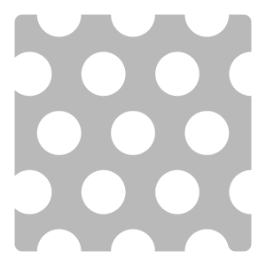
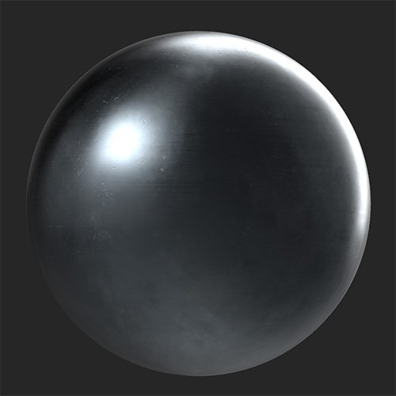
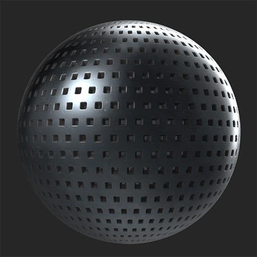

In: Generators
Use the Perforate filter to add holes to your material.
Before and after applying the Perforate filter.


Basic parameters
Mask
This section is only visible if Basic parameters > Use Mask is enabled
Perforation
Advanced parameters